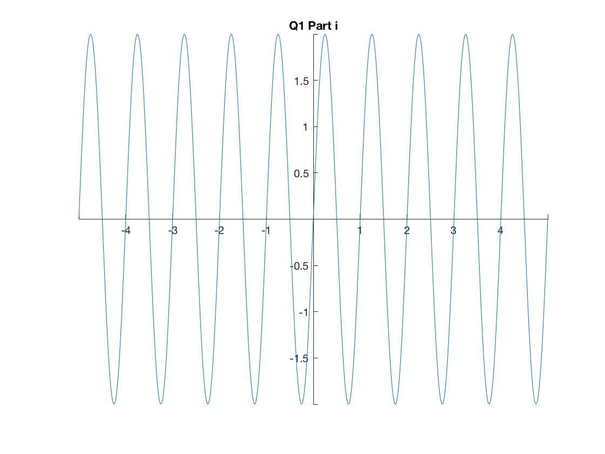
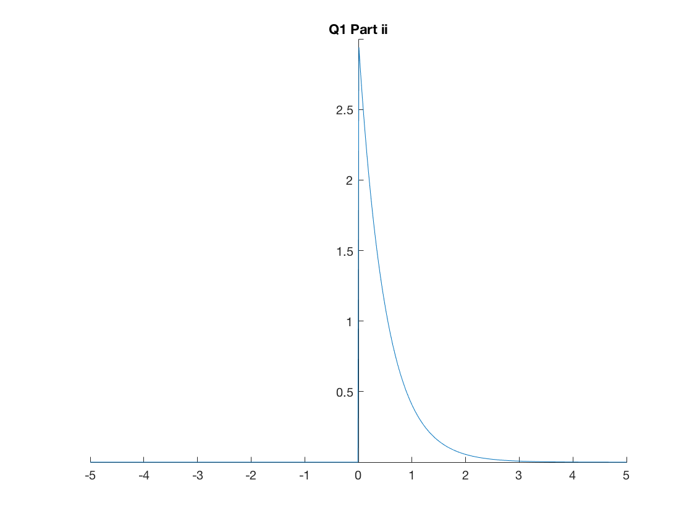
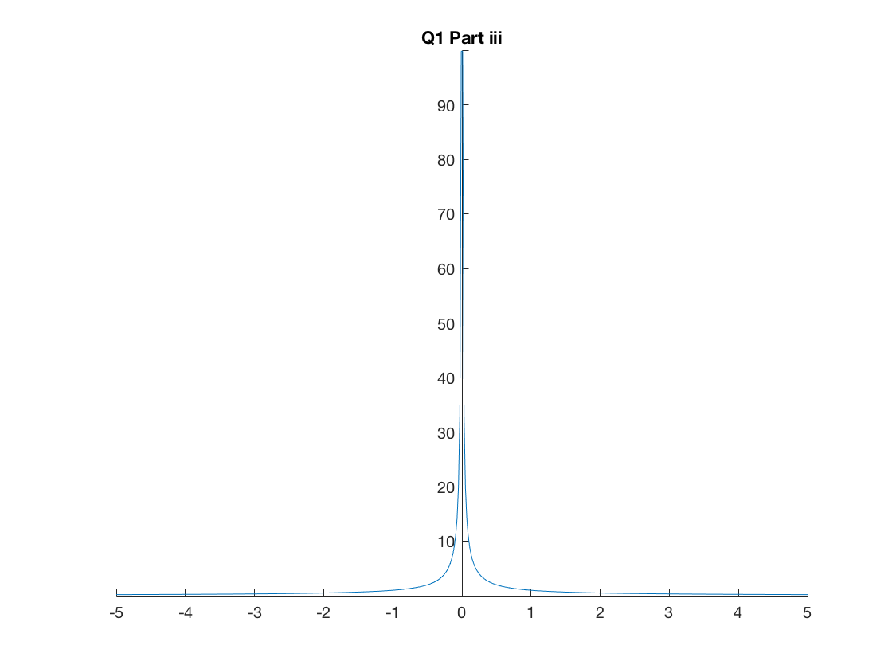
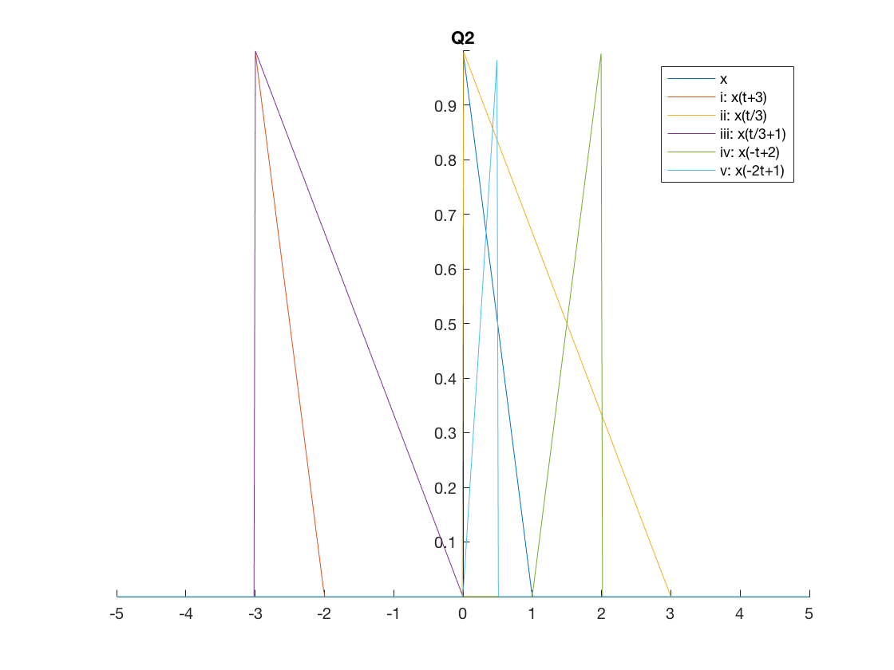
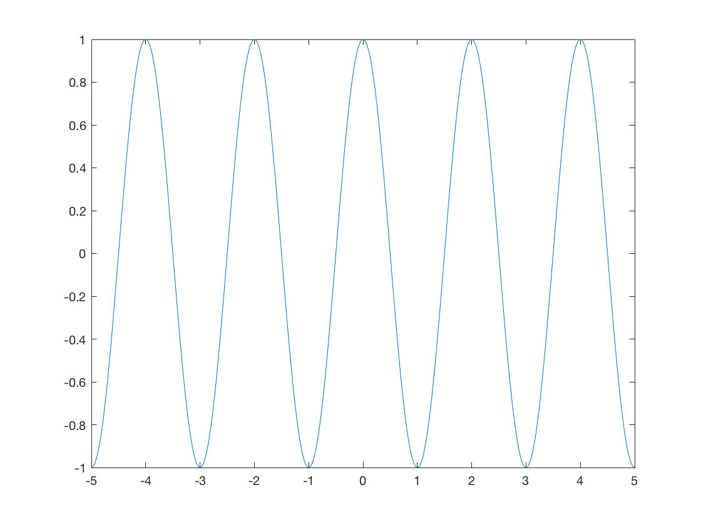

Contents
Tutorial Sheet 1
clc
clear all
format compact
close all
Question 1
t = linspace(-5,5,500);
x1 = 2*sin(2*pi*t);
x2 = zeros(1,length(t));
for i = 1:length(t)
if t(i) >= 0
x2(i) = 3*exp(-2*t(i));
else
x2(i) = 0;
end
end
x3 = 1./abs(t);
figure; plot(t,x1); originAxes(); title('Q1 Part i')
figure; plot(t,x2); originAxes(); title('Q1 Part ii')
figure; plot(t,x3); originAxes(); title('Q1 Part iii')
q1_i = 'non-causal, periodic with T= 1 sec, odd'
q1_ii = 'causal, aperiodic, not even/odd'
q1_iii = 'non-causal, aperiodic, even'
  
Question 2
x = q2(t);
x1 = q2(t+3);
x2 = q2(t/3);
x3 = q2(t/3+1);
x4 = q2(-t+2);
x5 = q2(-2*t+1);
figure(4); plot(t,x,t,x1,t,x2,t,x3,t,x4,t,x5); originAxes(); title('Q2')
legend('x','i: x(t+3)','ii: x(t/3)','iii: x(t/3+1)','iv: x(-t+2)','v: x(-2t+1)')
q2_i = 'translation left by 3'
q2_ii = 'expansion in x factor 3'
q2_iii = 'expansion in x factor 3 followed by translation left by 3'
q2_iv = 'reflection in x = 1'
q2_v = 'reflection in x = 0.5 followed by compression by factor 2'
q2_i =
translation left by 3
q2_ii =
expansion in x factor 3
q2_iii =
expansion in x factor 3 followed by translation left by 3
q2_iv =
reflection in x = 1
q2_v =
reflection in x = 0.5 followed by compression by factor 2

Question 3
x1 = cos(t*pi);
x2 = zeros(1,length(t));
for i = 1:length(t)
if t(i) <= 0
calc = 0.5^(-t(i));
x2(i) = calc;
else
x2(i) = 0;
end
end
figure; plot(t,x1); originAxes(); title('Q3 Part i')
figure; plot(t,x2); originAxes(); title('Q3 Part ii')
q3_i = 'non-causal, periodic with T= 2 sec, even'
q3_ii = 'non-causal, aperiodic, not even/odd'

Question 4
Question 5
Global functions
function originAxes()
set(gcf,'color','w');
ax = gca;
ax.XAxisLocation = 'origin';
ax.YAxisLocation = 'origin';
ax.Box = 'off';
end
function x = q2(t)
x = [];
for i = 1:length(t)
if 0 <= t(i) && t(i) <= 1
x = [x 1-t(i)];
else
x = [x 0];
end
end
end
function [sig] = sine_gen(amp, f, fs, T)
dt = 1 / fs;
t = 0:dt:T;
sig = amp*sin(2*pi*f*t);
end
function plot_spectrum( sig, fs )
magnitude = abs(fft(sig));
N = length(sig);
df = fs / N;
f = 0:df:fs/2;
Y = magnitude(1:length(f));
[pks,locs] = findpeaks(Y/(N)*2);
figure
plot(f, Y/(N)*2,f(locs),pks,'or');
xlabel('\fontsize{14}frequency (Hz)');
ylabel('\fontsize{14}Magnitude');
frequency_magnitude_peaks = transpose([f(locs);pks])
end
q1_i =
non-causal, periodic with T= 1 sec, odd
q1_ii =
causal, aperiodic, not even/odd
q1_iii =
non-causal, aperiodic, even